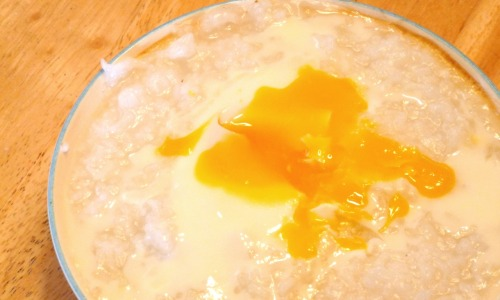

Chocolate Curry Buns

Description
So, I have been terribly sick this last week. Coughing, runny nose, sneezing, an aversion to anything that involves getting up, the whole shebang. So, one day when I was particularly hungry, I found the energy to make up some rice porridge. In Japan, rice porridge is the equivalent of chicken noodle soup when you’re sick. As such, if a person has just fallen sick with a cold or a fever in an anime or manga (SKET Dance included), chances are a friend will rush over and make them a pot of hot rice porridge. So if you’re ever feeling like you might be getting sick, call up a friend and hand this recipe to them, or, if you’re feeling cooped up at home and hungry, make it for yourself!
Ingredients
- ½ cup white rice (preferably short grain, but medium is fine)
- Water
- ½ teaspoon salt
- Optional ingredients: Eggs, chicken, onion, green onion, kimchee, umiboshi (sour plum), pork tenderloin, mushrooms, sesame seeds, soy sauce, sriracha, just about anything you want.
Steps
- Rinse the rice thoroughly in a pot, as per this recipe.
- Once the rice is clean, add in 3 cups of water and the salt and let the rice soak for at least 30 minutes.
- Bring the rice to a boil on medium-high heat, and then turn the down the heat to low and cook, covered by a lid, for 30 minutes. After that, turn off the heat, and let the rice sit for 10 more minutes.
- Pour/scoop into a bowl, and top with whatever you want!